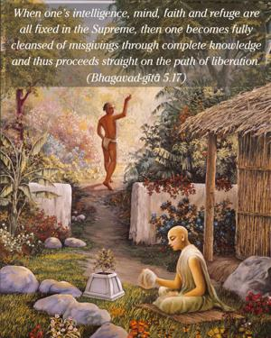

When one’s intelligence, mind, faith and refuge are all fixed in the Supreme, then one becomes fully cleansed of misgivings through complete knowledge and thus proceeds straight on the path of liberation.

The Supreme Transcendental Truth is Lord Kṛṣṇa. The whole Bhagavad-gītā centers around the declaration that Kṛṣṇa is the Supreme Personality of Godhead. That is the version of all Vedic literature. Para-tattva means the Supreme Reality, who is understood by the knowers of the Supreme as Brahman, Paramātmā and Bhagavān. Bhagavān, or the Supreme Personality of Godhead, is the last word in the Absolute. There is nothing more than that. The Lord says, mattaḥ parataraṁ nānyat kiñcid asti dhanañ-jaya. Impersonal Brahman is also supported by Kṛṣṇa: brahmaṇo hi pratiṣṭhāham. Therefore in all ways Kṛṣṇa is the Supreme Reality. One whose mind, intelligence, faith and refuge are always in Kṛṣṇa, or, in other words, one who is fully in Kṛṣṇa consciousness, is undoubtedly washed clean of all misgivings and is in perfect knowledge in everything concerning transcendence. A Kṛṣṇa conscious person can thoroughly understand that there is duality (simultaneous identity and individuality) in Kṛṣṇa, and, equipped with such transcendental knowledge, one can make steady progress on the path of liberation.